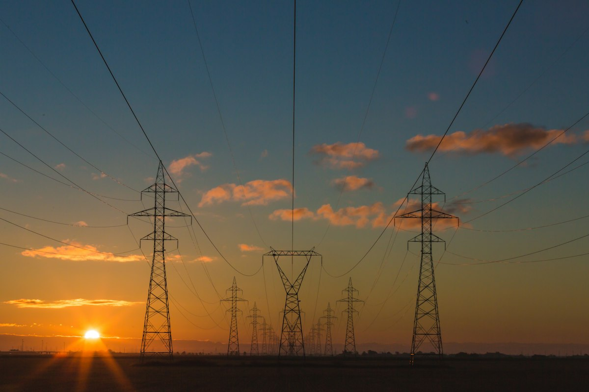

Decarbonizzazione
Riduzione progressiva delle emissioni e obiettivo di neutralità carbonica al 2050.
Project work universitario
Una pagina informativa dedicata a Eni, impresa attiva anche nell'estrazione di petrolio e gas naturale, attività che rientra nel settore primario secondo la classificazione economica tradizionale.
Vai ai report
Il contesto
Eni è una grande impresa italiana dell'energia. La sua attività comprende l'esplorazione e l'estrazione di idrocarburi, cioè petrolio e gas naturale, ma anche raffinazione, chimica, biocarburanti, energie rinnovabili e servizi legati alla transizione energetica.
Il collegamento con il settore primario nasce proprio dall'attività estrattiva: l'impresa utilizza risorse naturali del sottosuolo per ottenere materie prime energetiche. Per questo il caso è adatto a ragionare sul rapporto tra risorse naturali, impatto ambientale, sicurezza energetica e sostenibilità.
Azioni principali
Riduzione progressiva delle emissioni e obiettivo di neutralità carbonica al 2050.
Gestione di biodiversità, acqua, suolo, aria e attività di bonifica ambientale.
Salute, sicurezza, diritti umani e attenzione alle comunità nei territori di presenza.
Integrazione della sostenibilità nella catena del valore e nei rapporti con i fornitori.
orizzonte dichiarato per la neutralità carbonica
Paesi in cui Eni dichiara di operare
anno dell'ultimo report di sostenibilità disponibile
Download